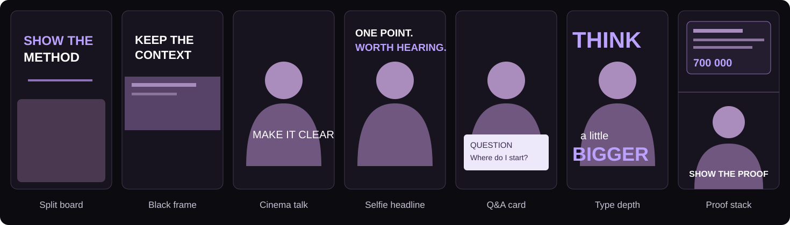
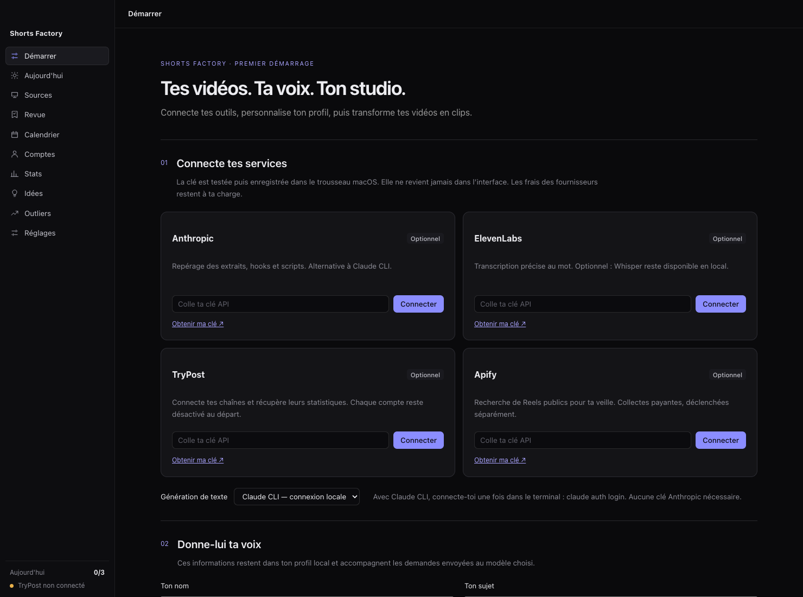

Keep the part that matters.
Import your own videos. Find self-contained moments, remove dead air, and cut on the words with local transcription.
Open source · Local video studio
Turn your long videos into clips worth watching. An Electron studio for the edit, the hook, the review — and what you make next.
macOS · Apple Silicon · MIT license · Bring your own services
A complete working loop
Your recording is the source of truth. Keep the words, finish the thought, make the opening clear. Then see what people actually watched.
Import your own videos. Find self-contained moments, remove dead air, and cut on the words with local transcription.
Hooks are checked against the transcript and your voice. Review the render, change the format, approve when it is ready.
Connect channels, compare formats and topics, and use the selected evidence to generate new ideas. Missing metrics stay unknown.
Seven formats. All the source.
Talking head, screen recording, Q&A, type behind the speaker or real captures above the face. Each format includes the renderer, its settings and a reusable agent skill. Customize the shared fonts and colors once.

Illustrated layouts. Ten project skills plus thirteen upstream video skills. The upstream workflows are optional and are not all app features.
Your first launch
Add your niche, your audience and a few lines you actually wrote. Connect Anthropic or use Claude CLI, then add the services you need. Keys are tested and saved in macOS Keychain.

ElevenLabs, TryPost and Apify are optional. Provider charges apply to usage. Text, audio or approved media is sent to your chosen service for the corresponding task. Automatic approval and publishing are off on a new install.
Make your first clip
git clone https://github.com/gquthier/shorts-factory.git cd shorts-factory npm ci npm run setup npm start
Prerequisites: macOS, Node 22.18+, FFmpeg, yt-dlp, whisper.cpp, Chrome and Apple Command Line Tools. Setup prepares the engine and downloads the Whisper model when missing. Full installation guide ↗
The interface and editing heuristics are French first. The initial Mac release is not Apple notarized; macOS may ask you to use “Open Anyway”. Local video tools are required for the downloaded app too.
Built to be made your own
Fork it, change a format, improve a skill. Make something worth watching.